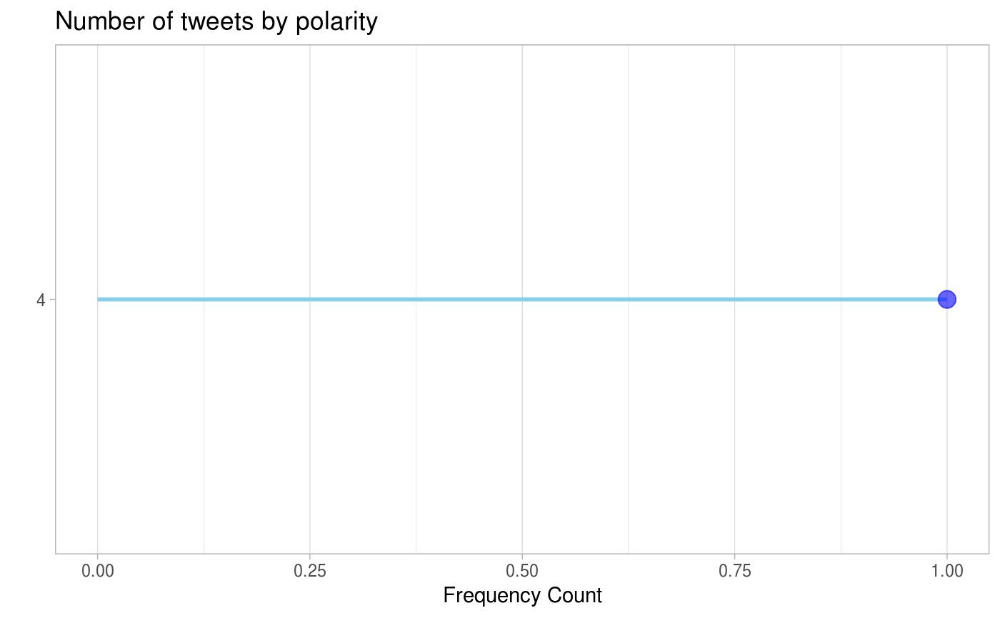

R/query_freq_by_polarity.R
freq_by_polarity.RdQuery the dataset for frequency by polarity based on several filters and return the raw data, frequency data and a plot for the same.
| data | the sentiment dataset containing variables |
|---|---|
| user_list | a vector of users for which to filter the dataset. |
| start_date_time | input start_date_time in POSIXct format on which to filter the dataset |
| end_date_time | input end_date_time in POSIXct format on which to filter the dataset |
| keyword_list | a list of string keywords on which to filter the dataset |
a list object with raw filtered dataframe, frequency dataframe that holds the frequency counts by polarity and a plot depicting the relationship between the two
library(lubridate)#> #>#> #> #>sample_data <- data.frame("user" = c("test_user1", "test_user1", "test_user2"), "date" = c(lubridate::as_datetime("2009-04-01"), lubridate::as_datetime("2009-04-05"), lubridate::as_datetime("2009-04-10")), "text" = c("Sample tweet 1 from user1", "Sample tweet 2 from user1", "Sample tweet 1 from user2"), "polarity" = c(0, 4, 4), "id" = c(1,2,3)) freq_by_polarity(data = sample_data, user_list = c("", "test_user1"), start_date_time = lubridate::as_datetime("2009-03-30"), end_date_time = lubridate::as_datetime("2009-06-30"), keyword_list = c("tweet 2"))#> $raw #> user date text polarity id #> 1 test_user1 2009-04-05 Sample tweet 2 from user1 4 2 #> #> $frequency #> # A tibble: 1 x 2 #> polarity counts #> <fct> <int> #> 1 4 1 #> #> $plot#>